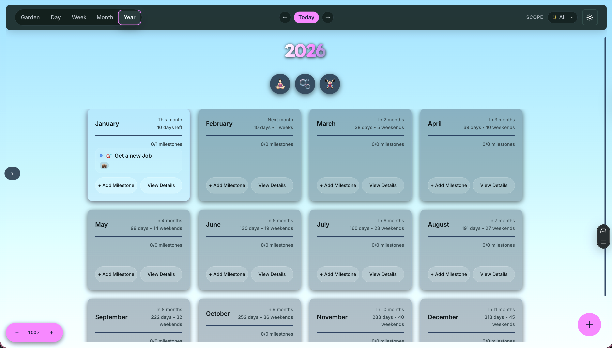
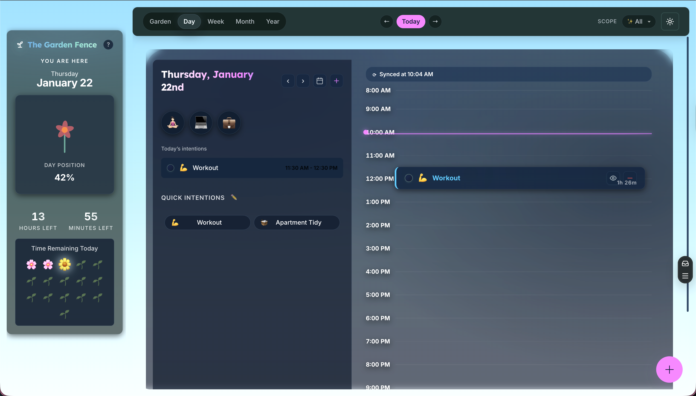
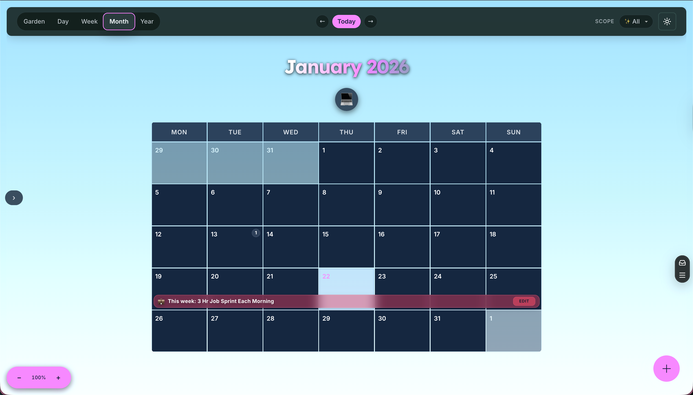
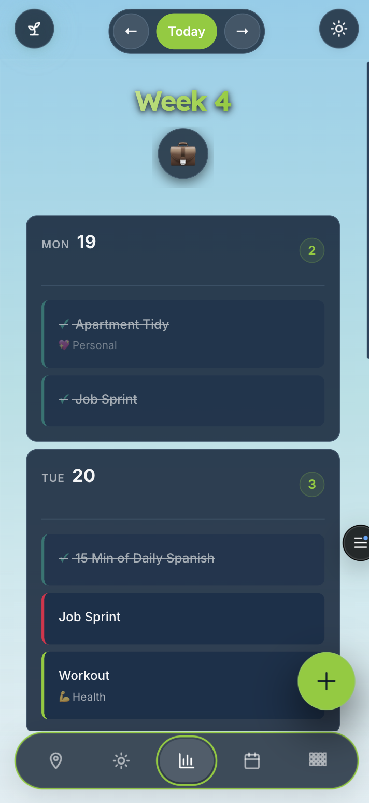

The Garden Fence
A visual time-orientation tool designed to reduce time blindness and planning overwhelm for neurodivergent users.
The Challenge
Traditional productivity tools assume consistent attention and linear planning. For people with ADHD, this creates a cycle of optimistic planning followed by overwhelm when time perception stretches or compresses.
The Cycle of System Collapse
Most planners fail when users forget long-term goals during daily chaos or feel guilty when systems require high maintenance. I set out to build a tool that makes time visible and keeps long-term visions present without the pressure of rigid productivity tracking.
The Solution
I built a visual time-orientation tool centered around three core pillars designed specifically for neurodivergent brains.
1. Multi-Scale Time Visualization
Instead of just a calendar, The Garden Fence provides smooth zooming between Year, Month, Week, and Day views. A persistent "You Are Here" panel shows immediate context—time remaining today, weeks left in the year, and progress visualized as a blooming flower.

Figure 1: The main dashboard making time visible at scale, reducing the maintenance burden while keeping long-term goals present.

Figure 2: The day planner view with the 'Now Beam' visual indicator, addressing time blindness by making the day's structure visible.
2. ADHD-Specific Support
The interface includes dedicated tools for executive function support: a Brain Dump for intrusive thoughts, a Body Double Timer for accountability, and a "Surprise Me" button to combat decision paralysis.

Figure 3: The Month view provides a mid-range perspective, helping users transition from daily intentions to monthly focus areas.
Focus Mode
Reduces visual noise and hides everything but the current task to prevent distraction.
Quick Wins
Dopamine-friendly task suggestions for days when motivation is low.

Figure 4: Mobile-first design with swipe gestures and a bottom tab bar, ensuring the tool is available whenever orientation is needed.
3. Hierarchical Goal System
Goals are organized into a four-level hierarchy: Vision → Milestone → Focus → Intention. This allows users to see exactly how their daily actions connect to their yearly dreams without feeling overwhelmed by the distance between them.
Modern Builder Perspective
Demonstrating High-Agency Execution and Technical Orchestration.
Speed to Market
Built as a solo project using Vite for instant HMR and TypeScript for early error detection. This modular architecture allowed me to move from concept to a production-ready PWA in a fraction of traditional development time.
Technical Highlights
Complex State Management
Built a custom event-driven state system with IndexedDB for offline-first persistence and optimistic UI updates.
Supabase & RLS
Implemented secure multi-device sync with complex Row Level Security (RLS) policies across 6+ interconnected tables.
WCAG 2.1 AA Compliance
Engineered for inclusivity with full keyboard navigation, screen reader support, and dyslexia-friendly typography (Lexend).